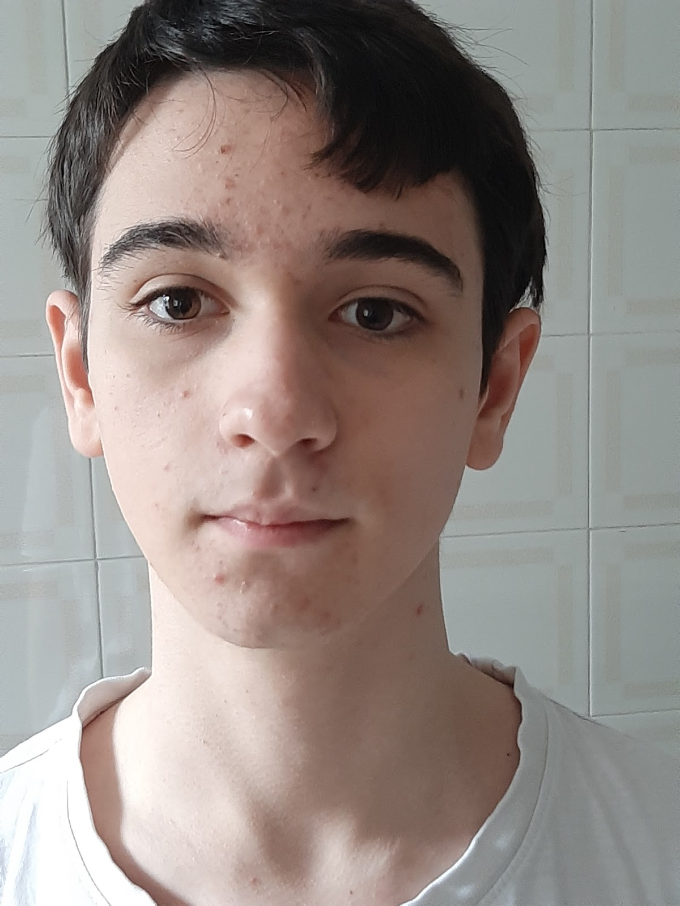

Mi piace molto imparare cose nuove anche se non adoro studiare, una frase che penso esprima bene questo concetto viene detta da Ulisse in una terzina del ventiseiesimo canto dell'inferno Dantesco:
«Considerate la vostra semenza:
fatti non foste a viver come bruti,
ma per seguir virtute e canoscenza»
Attualmente ho 16 anni e frequento l'istituto internazionale Edoardo Agnelli, più specificatamente sono iscritto alla 3° informatica.
fatti non foste a viver come bruti,
ma per seguir virtute e canoscenza»
Mi piace abbasta leggere a patto che il libro appartenga ad un genere che mi interessa come fantasy e giallo.
Mi sono appassionato all'informatica sin da piccolo, mentre guardavo i mie genitori smanettate con quella scatola affiancata da uno schermo che loro chiamavano computer.
Probabilmente dopo essermi diplomato andrò all'università.
Mail istituzionale: marco.garabello@istitutoagnelli.it
